…というわけで、シンガポールでカレーとラクサとカヤトーストをたっぷり堪能したので再びベトナムに戻ってきたよ。
次に向かったのは中部の
ダナンという街。
ベトナム戦争中は米軍最大の基地があり、その様子は映画フルメタルジャケット等にも出てくる。
一説には
地獄の黙示録の
あのサーフィンのシーンはこのダナンが舞台だとか、そうじゃないとか…。
私が知る限り
アメリカ映画史上最高にクレイジーな映画の中でも抜群にデタラメなシーンだと思うので御覧になってない方、是非ご覧あれ。。
さて。
ダナンである。
米軍基地の街だったのも過去の話。
今では
アジア屈指のリゾート地である。
海岸沿いには高級リゾートが並び、かつての生臭い歴史などどこ吹く風、といった風情なのである。
そんな海沿いのリゾート地を過ぎると、いきなり巨大な山塊が現れる。
五行山という山である。
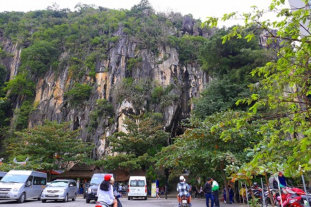
この山には巨大な鍾乳洞があり、その中が中々楽しい事になっているのだそうな。
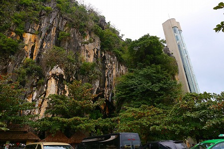
ダナンの街からの路線バスを降りたらすでに大勢の観光客が。
韓国からの団体さんが多かった。
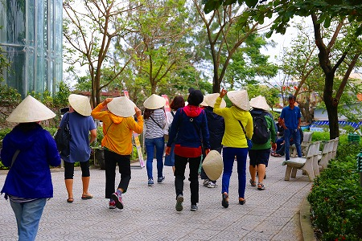
皆さんお揃いの帽子をかぶって、キャッキャとご機嫌なご様子。
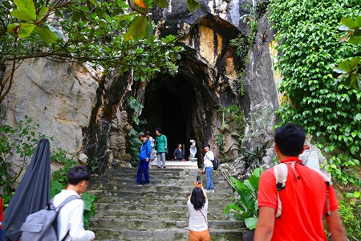
洞窟の入り口。
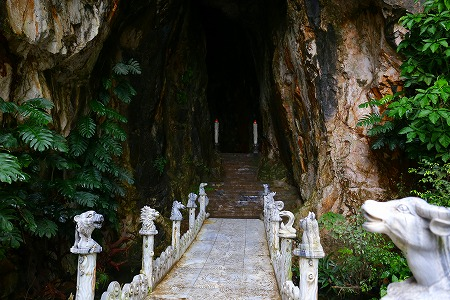
大理石の橋を渡って入洞する。
ちなみに五行山はマーブルマウンテンとも呼ばれている通り大理石の一大産地だ。
周辺には大理石製の土産物を売る店が軒を連ねているだけでなく、建築資材用の大理石製品を扱う石屋も結構多かった。
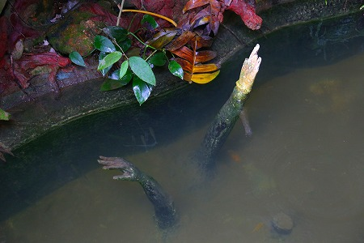
橋から下を見てびっくり！
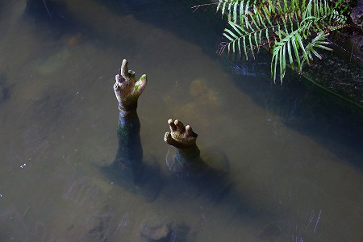
水中から手が出てますけど…
そんなこんなで内部に。
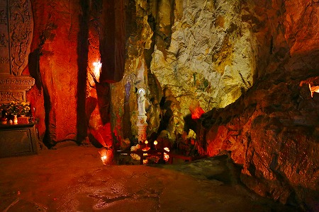
洞内は思いのほか広く、マレーシアのバツーケイブを髣髴とさせるサイズだった。
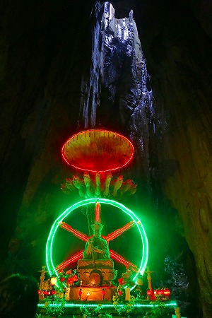
洞内のあちこちに仏像が配置されており、洞窟寺院の様相を呈している。
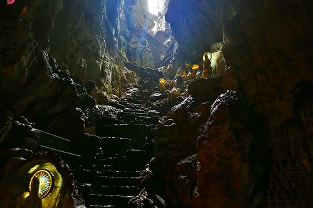
メインのホールの他にも上に登って行く脇道もあり、意外と楽しめる。
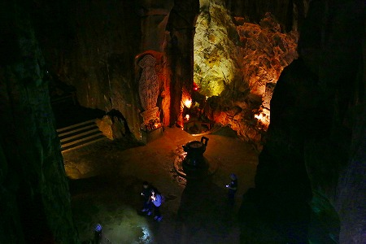
脇道の上からメインのホールを眺める。
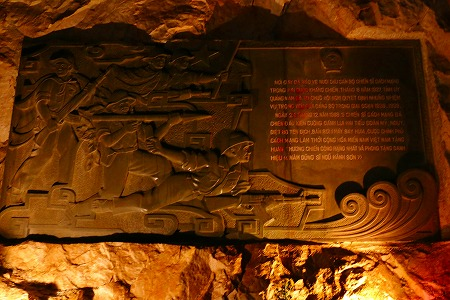
何故か兵士のレリーフが。ベトナム版爆弾三勇士なのだろうか。ちがうか。
更に進んでいくと段々妖しげな雰囲気になってくる。
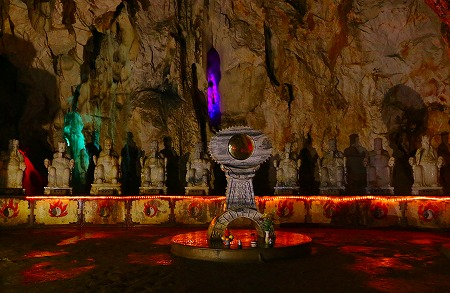
死後の世界を司る十王が並んでいる。
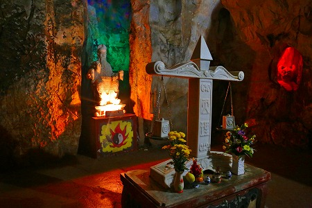
そしてメインに閻魔大王。
…ということは手前にある天秤は業の秤だろうか。
右側の壁の中から獄卒が凄い顔でにらんでいるぞ！
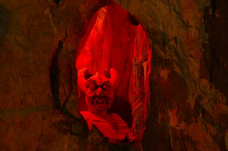
…というわけでここから先はお楽しみの地獄ゾーンが続く。
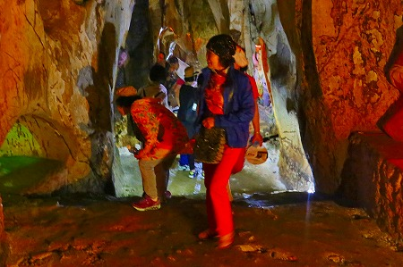
韓国のオバちゃん達もキャッキャキャッキャ喜びながら見ている。
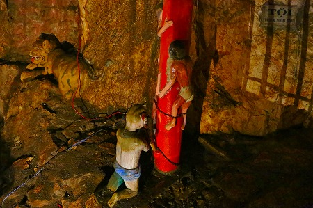
内容としてはタイの地獄に比べるとややおとなしめ。
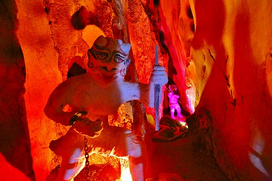
やはり中国の影響が強い国だけに中華圏で見られる
道教的な地獄に近いイメージがある。
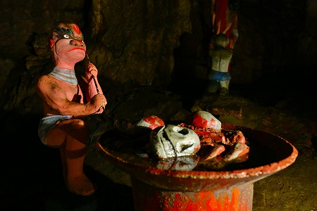
地獄鍋。
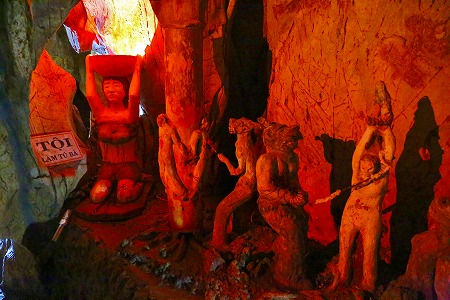
柱に縛られて責め苦を受けるパターンが多いようだ。
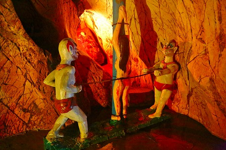
造形のレベルとしては、まあ、御覧の通りですわ。
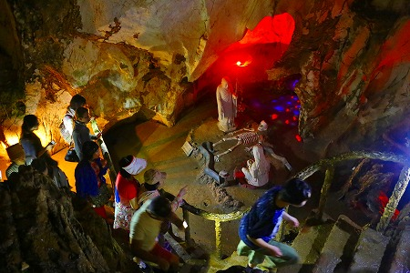
地獄世界はアップダウンしつつ、段々暗くなってくる。
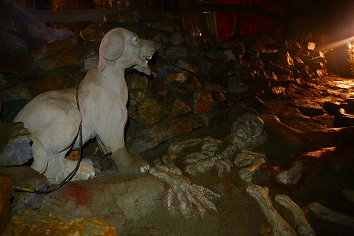
せめられ過ぎて白骨化。
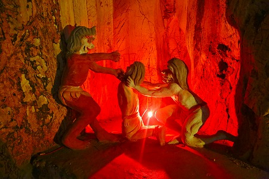
うむー。こう言っては元も子もないがもう少し造形に力入れていただくとこちらのテンションもやや上がるのですが…。
微妙に可愛い過ぎるんだよねー。
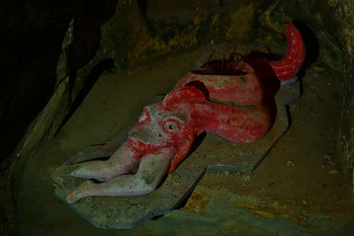
飲まれちゃってますね。
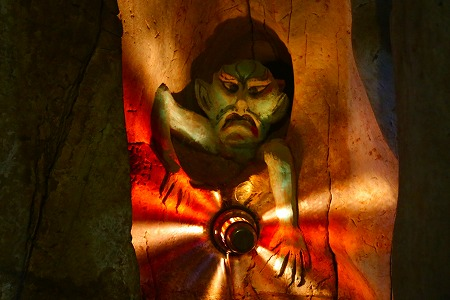
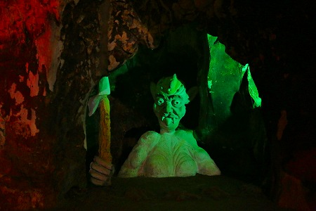
てなわけで、じっとりとした湿気の中、あの世体験ツアーが出来るナイスな洞窟だった。
造形のレベルは兎も角、規模と雰囲気にはとりあえず満足！
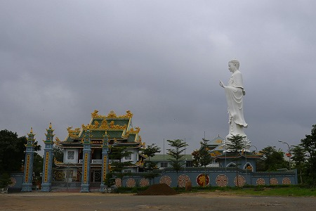
ダナンの街に戻る途中、見かけた大仏さん。
後で地図を見てみたらChuaBaDaというお寺だった。
次へＧＯＧＯＧＯ！